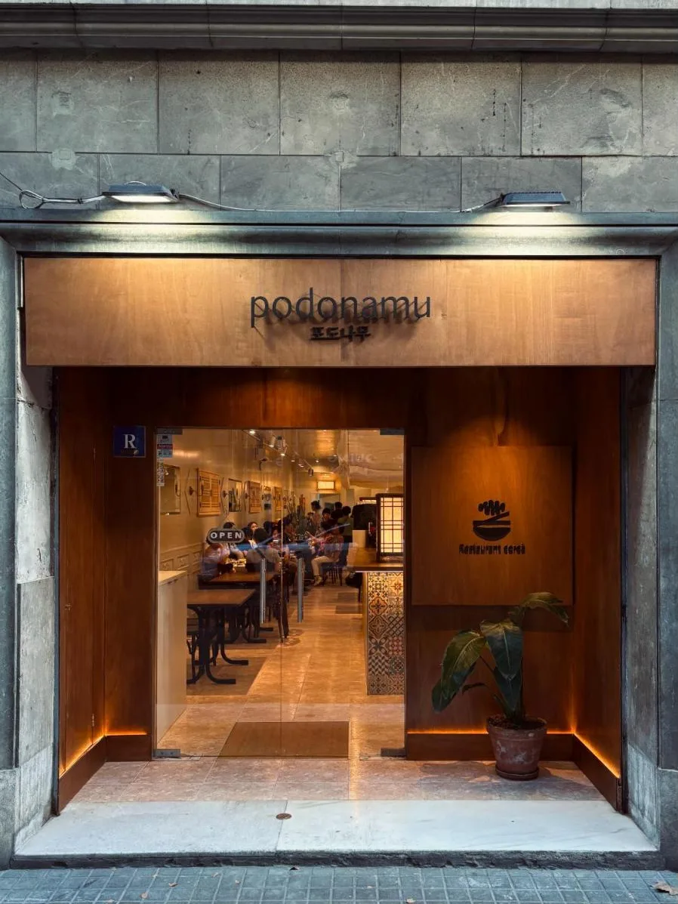
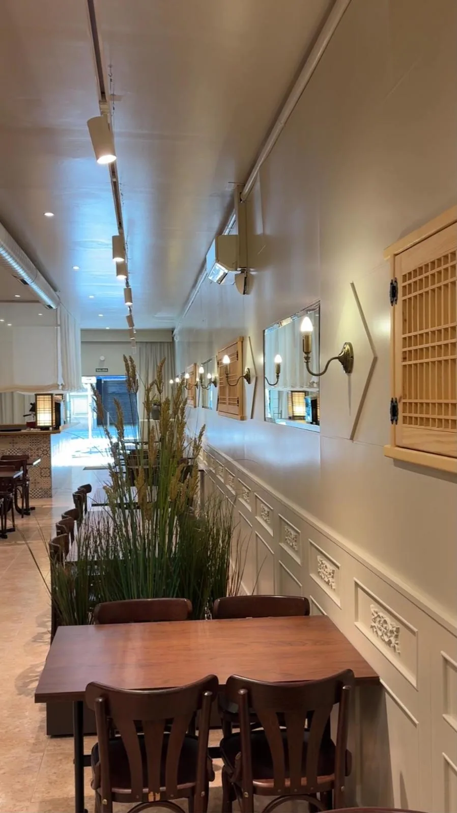
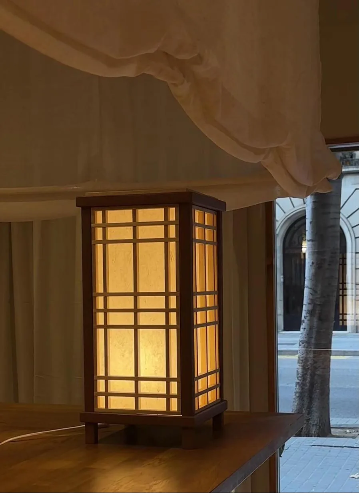
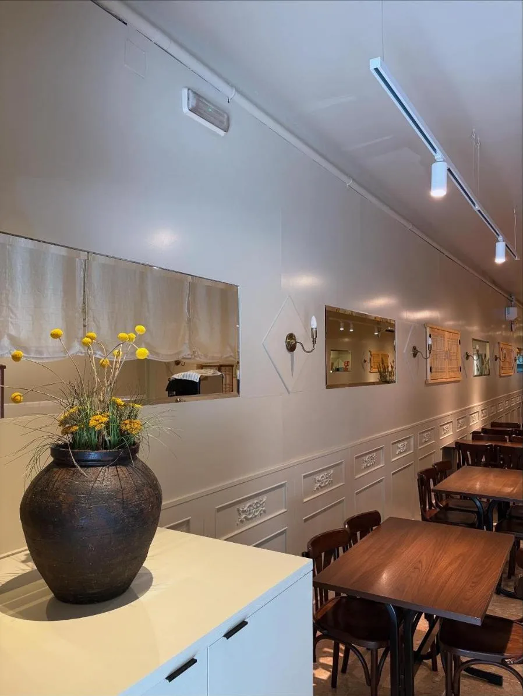

해물짬뽕

Po.do.na.mu
Jjamppong, kimchi jjigae, bibimbap en olla de piedra y pollo coreano en pleno Eixample. Todos los platos principales llevan banchan y arroz.
los favoritos
Los platos que más nombran vuestros clientes en las reseñas de Google.
포도나무 quiere decir “la vid”. Una casa coreana con madera cálida, faroles de papel y sitio para quedarse.
Un comedor largo y luminoso en Carrer de València, con detalles tradicionales coreanos: ventanas de celosía, vasijas de barro y faroles de papel hanji. Para comer con calma o compartir platos entre todos.



opiniones
919 reseñas de clientes, de aquí y de Corea.
Una joya de comida tradicional coreana en Barcelona.Reseña de Google
Las porciones son generosas y la calidad es un 10.Reseña de Google
He vivido en Seúl: comer aquí es como comer en Corea.Reseña de Google
Uno de los mejores coreanos de Barcelona.Reseña de Google
reservas
Elige día, hora y cuántos sois. Te confirmamos la reserva.
visítanos
Carrer de València, 164
Eixample, Barcelona
horario